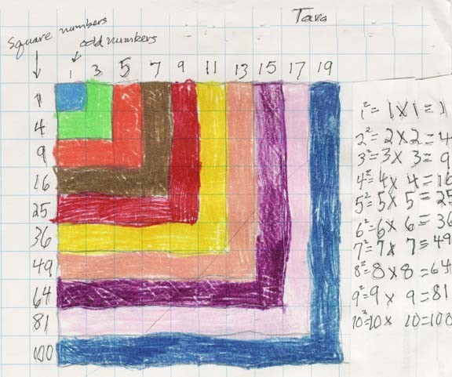

Tara, Don's granddaughter, at age 8, worked on square numbers.
As of March 2010, at age 26, she and her fianc' are in Greece, almost a year into bicycling around the world!- see http://www.goingslowly.com

To download
Don's materials
Mathman home